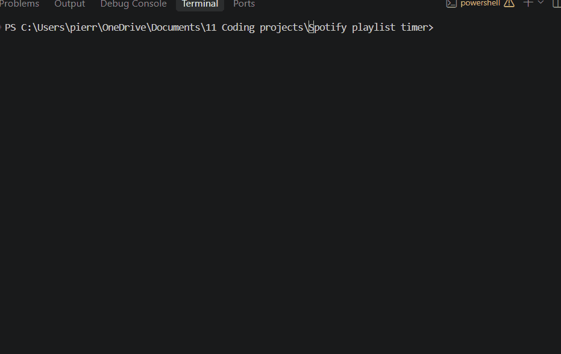
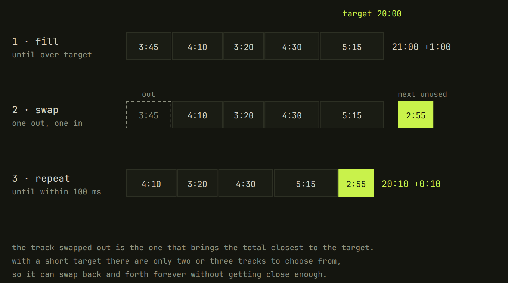
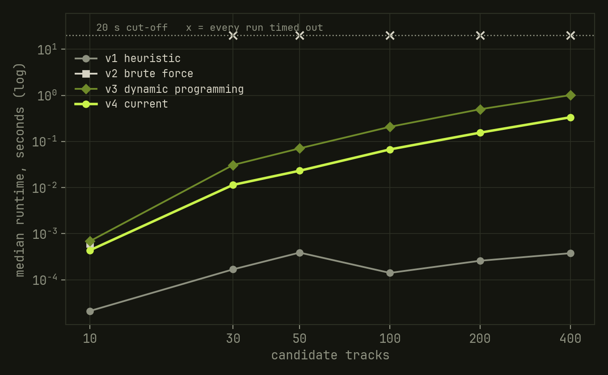

A Spotify playlist timed to the second
Four versions of one algorithm, and a benchmark to compare their performance.

01 — Introduction
Ask for 56 minutes of house music, and this program will create such a playlist in less than a second. Behind this program lies a classic problem: the subset-sum problem, for which I had to build four versions of my algorithm before solving it quickly and reliably. This was my first proper project: easily clonable, with tests and a licence. I even benchmarked all four versions of my algorithm to analyse the strengths and weaknesses of each.
02 — The problem
Given a set of tracks, find a subset whose durations add up to a target. This is the subset-sum problem.
03 — Version 1: the heuristic approach
My first idea was simple: I would fill a prototype playlist until it overshot the target duration. I would then consider the first track among the tracks I didn’t use in my playlist, and swap it with a track in my current prototyped playlist. I would swap the track that would bring the duration of my playlist closest to the target duration. Repeating this process got me good results, but it was not always reliable.

By running a benchmark with my four algorithms, I found that version 1 failed to produce a playlist within the 20-second cut-off in 26% of cases. When it did finish, it was by far the fastest (typically under a millisecond) and hit the target exactly. Its failures clustered on short targets: a 5-minute playlist only holds two or three songs, which leaves too little space for the algorithm to fine-tune by swapping, resulting in the algorithm getting stuck in a loop, never converging on the target time.
04 — Version 2: brute force approach
The brute-force technique is to compute all possible playlists and select the one that matches the target duration or the one closest.
This failed miserably and it’s easy to see why. There are 2n subsets of a set of length n. With 30 tracks, that’s already more than one billion possibilities.
The timeout rate for version 2 is extreme. It timed out in 63% of runs, and for a 60-minute playlist it failed at every size from 30 tracks upwards. I actually built this version by mistake while trying to build the dynamic programming algorithm. The only difference between version 2 and 3 is that two playlists that both last 700 seconds are kept in version 2 whereas only one is kept in version 3. It is almost totally useless and serves more as a demonstration rather than as an algorithm with any genuine use.
05 — Version 3: Dynamic programming
If a 550-second playlist is reachable and the next track available is 190 seconds, then a 740-second playlist is reachable. By using this principle, I could bulid an index of all reachable playlist durations.
This works by keeping a dictionary with one entry for each reachable playlist time. The runtime is limited because there are only so many whole-second durations below the target. For that reason, the runtime is approximately O(#tracks x target). This only works when the target is relatively small, and as the target rarely goes into the tens of thousands, this was the case in this problem.
06 — Version 4: fixing a hidden bug
There was a bug in the first version of the dynamic programming algorithm. For each new track, version 3 loops over a copy of the dictionary’s keys but reads the playlists from the live dictionary. Suppose that, earlier in the same pass, the 1,200-second entry was overwritten with a playlist that already contains the current track. When the loop reaches 1,200 seconds, it sees the track is already used and skips it. But the old 1,200-second playlist, which didn’t contain that track, could have been extended, so that new total is lost.
The fix was to take a snapshot of the whole dictionary, keys and playlists, before adding each track.
The bug only shows when tracks are scarce. With hundreds of tracks, every total can be reached in so many ways that losing one route doesn’t matter. Ordinary use never revealed it. However, the benchmark showed that in every test where versions 3 and 4 gave different answers, version 4 was closer to the target, in one case by more than 4 minutes.
Version 4 also skips totals it has already reached instead of rebuilding them, which made it about 3× faster once there are 30 or more tracks, and it shuffles the tracks first, so the same request gives a different playlist each time. Versions 3 and 4 were the only ones to finish all 150 of their benchmark runs.
07 — Results
In the benchmark, each version was run 150 times. Version 1 failed to produce a playlist within the 20-second cut-off in 26% of its runs, version 2 in 63%, and versions 3 and 4 in none. The chart below shows how long each version took to build a 60-minute playlist as the number of candidate tracks grew.

08 — What I learned
Building this project exposed me to many ideas which are key to building apps. I made many first-time mistakes: I published my .env file to GitHub, which contained my Spotify client secret. I fixed this security flaw by deleting the .env from the version history of the project, and rotating my secret. This mistake taught me the proper procedure for using APIs, which I’ve rarely had the chance to use in the past.
I wanted this project to be able to be used by others. Therefore, I added an MIT licence to my project for the first time, and wrote a detailed README to allow it to be cloned and used by others.
The most useful thing about this project was being able to measure and pit the different versions of my algorithm against each other. I enjoyed being able to rate my algorithm’s performance, especially as optimising runtime is something I’ve become increasingly interested in. Testing each version on its own told me whether it worked; measuring them against each other showed where each one broke.